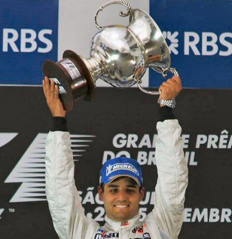
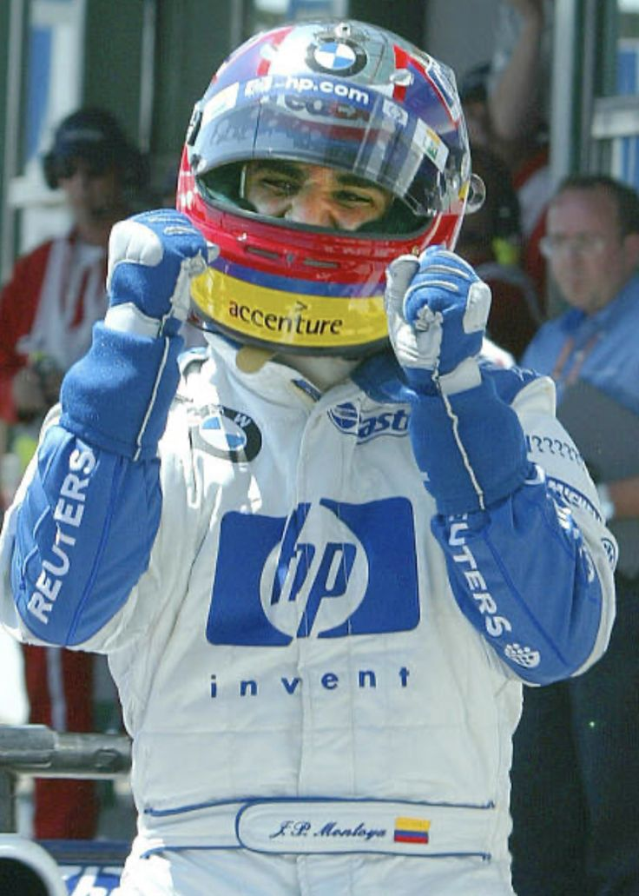

Biografía
Resumen y cronologíaJuan Pablo Montoya es uno de los pilotos más destacados en la historia del automovilismo colombiano e internacional. Famoso por su versatilidad, ha competido y ganado en categorías como CART/IndyCar, Fórmula 1, NASCAR y campeonatos de resistencia.
Cronología seleccionada
- 1999: Campeón de la Serie CART.
- 2000: Ganador de las 500 Millas de Indianápolis.
- 2001–2006: Piloto en Fórmula 1 con Williams y McLaren.
- 2007–2014: Participación en NASCAR y otras competiciones.
- 2015: Segunda victoria en las 500 Millas de Indianápolis.
Hoja de vida
Descargar CV (PDF)| Nombre | Juan Pablo Montoya Roldán |
|---|---|
| Fecha de nacimiento | 20 de septiembre de 1975 |
| Lugar | Bogotá, Colombia |
| Profesión | Piloto de automovilismo profesional |
Logros destacados
- Ganador de las 500 Millas de Indianápolis (2000, 2015).
- Campeón de la Serie CART (1999).
- Victorias y podios en Fórmula 1.
- Participación notable en NASCAR y resistencia.


Nota: reemplaza las miniaturas por material con derechos adecuados antes de publicar.
Propósito del sitio
ObjetivosRendir homenaje a la trayectoria de Juan Pablo Montoya y difundir su legado. La web busca ser una fuente educativa y visual para fanáticos y futuros pilotos, ofreciendo biografía, estadísticas, recursos y noticias actualizadas.